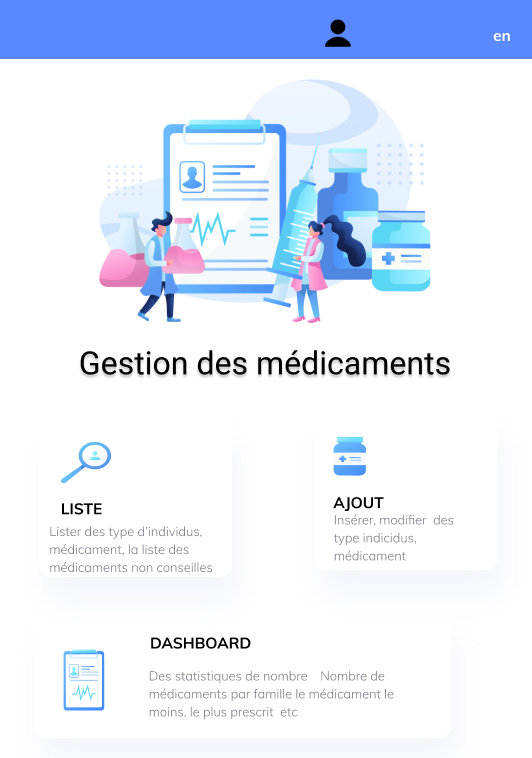
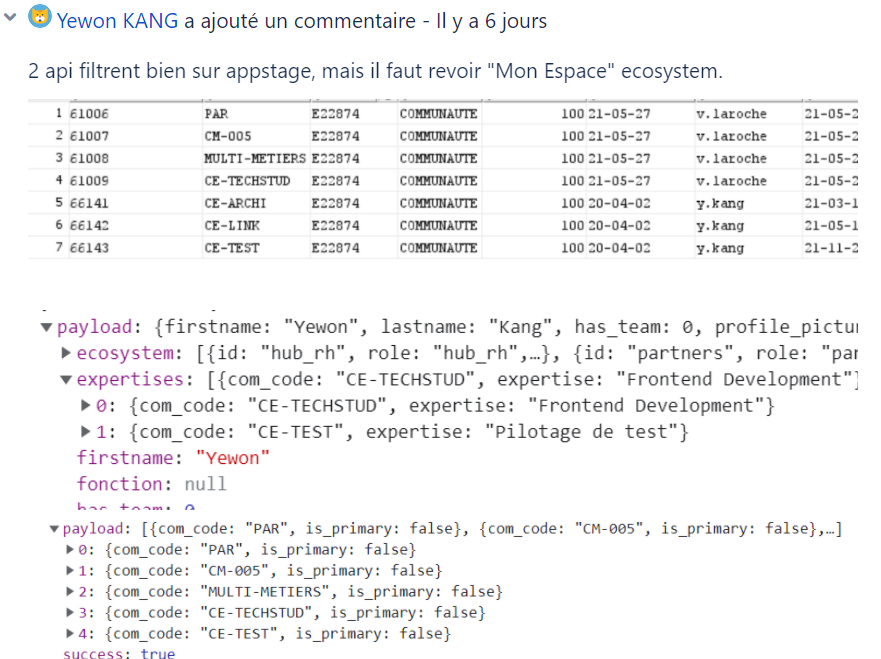

La première page de jeu Web que j'ai créée. J'ai utilisé uniquement CSS, HTML et javascript sans aucune bibliothèque ni framework
[Gestion de Medicament]

[Gestion de Visiteur]
le contexte des deux projets sont identiques : un groupe de laboiretoire veut des applications web pour gerer ces données
Langages [framework] : php [symfony] / java
[E-synergie] est une web application de gestion pour les Ressources humaines de l’entreprise. Par exemple Ils peuvent voir les entrées et sorties des collaborateurs par date etc. Les RH peuvent aussi voir les primes des collaborateurs. Aussi cette application permet de visualiser tous les projets du groupe.
[ context ] Modifier les entrées des primes dans la fiche collaborateur :
A la saisie d'une prime, les champs suivants doivent être obligatoire.
Les dates prévue et date de versement doivent être en format mm/YYYY.
[ méthode de résolution ] La compréhension générale de EXT js
▶ création de nouvelle fonctionnalité
[ context ] Ajouter une condition à la fonctionnalité d’exportation en Excel
[ méthode de résolution ] J'ai choisi la fonction de base php. Comme la simple comparaison avec la valeur date n'a pas fonctionné, j'ai utilisé "var_dump" et "DD" pour vérifier la situation.
[Homeboarding] sert à la gestion de ma vie d’employé au sein de Onepoint (documents à signer, imputation des lignes de compte rendu d’activité, feedback)[version web/mobile]
[ context ] Les listes déroulant de choix du mois et choix n'arriche pas par défaut ni les choix effextués par les collaborateur.
[ méthode de résolution ]Je devais comprendre l'element Forms en REACT qui est different que d'autre DOM.

▶ création de nouvelle fonctionnalité
[ context ] Comme il y a de plus en plus de personnes travaillant à domicile, nous devons ajouter des lignes d'imputation 'Teletravail' sur l'imputation de compte rendu d’activité.
[ méthode de résolution ] Nous devons créer un bouton en utilisant css, useEffect, des actions en React store, Api pour obtenir et envoyer la déclaration actuelle .
Mais dès le premier code, nous avons eu trop d'appels api qui induisaient des ralentissements sur le site.
Nous devons donc utiliser Redux(Hooks).
Nous avons également utilisé FeatureFlag, comme il s'agit d'une nouvelle fonction, nous devons autoriser certains utilisateurs à tester pendant quelques temps.
▶ Amélioration de la sécurité
[ context ] Après avoir fait les testes d'intrusion de l'application homeboarding par l'expert securité, nous avons réalisé qu'il y avait une faille de sécurité.
Et cette faiblesse vient du code que nous avons créé.
Pour le développeur, il est facile de mettre des informations à tester plus facilement.
Cependant en termes de client, c'est l'exposition d'informations personnelles.
mon travail était créer les mêmes problèmes vers PostMan et changer certains contrôleurs API.
▶ Suppression de fonctionnalités
[ context ] Supprimer la fonctionnalité de modification de photo
[ méthode de résolution ] J'aurais dû comprendre tout le processus de Statement dans React pour ne pas supprimer le code non lié
▶ Insertion en base de données
[ context ] Un nouveau document "Protocole Onepoint 2020" est proposé aux collaborateur.
[ méthode de résolution ] J'aurais dû trouver où mettre le document, comment sélectionner un groupe spécifique de personnes et injecter des requête sql.
CV
You can find my CV by clicking the version you want.
Passer des commandes pour les stocks alchools, communiquer en anglais avec des clients étrangers, prepration du cocktail
2019 - 2020 Corée du sud [ Seoul ]
BTS SIO option SLAM
ORT MONTREUIL [INITIAL]
Cours d’algorithmique appliqué sur python, de mathématiques appliquées à l’informatique, de gestion des réseaux, du droit lié à l'informatique.
Stage chez onepoint
Développement d’applicatifs avec respect des délais et des normes de
développement, Réalisation des phases de tests, Maintenance corrective et évolutive des outils existants
2020-2021 France [ Paris / Montrueil ]
BTS SIO option SLAM
ORT DANIEL MAYER [ALTERNANCE]
Création de projets en Java, Php
alternance chez onepoint
Développement d’applicatifs avec respect des délais et des normes de développement, Réalisation des phases de tests, Maintenance corrective et évolutive des outils existants
2021-2022 France [ Paris / Montrueil ]
Projet professionnel
J’ai envie de travailler dans une organisation à dimension internationale en tant qu’experte Backend
pour une application de service riche en informations et qui personnalise l’experience utilisateur
2002 : Création de onepoint.
2003 : Implantation au Canada et aux États-Unis.
2016 : Ouverture du siège social à Paris au Trocadéro.
2019 : Implantation en Australie (Melbourne, Sydney) et à Singapour.
2024 : Ouverture du campus numérique du Jardin de l'Ars, à Bordeaux
▶ la forme juridique
SAS, société par actions simplifiée
▶ Taille d'entreprise
Entreprise de taille intermédiaire (ETI)
▶ RGPD
Onepoint a « Privacy Center » autour de 5 piliers :
1) Gouvernance et accompagnement à la mise en conformité
2) Gestion de crise et traitement des violations de données
3) Assistance DPO/ DPO de transition
4) Sensibilisation et gamification
5) Mise à disposition des Technologies
▶ RSE
L’obtention de cette médaille d’or vient récompenser nos efforts d’intégration des préoccupations sociales et environnementales.


 Université
Université